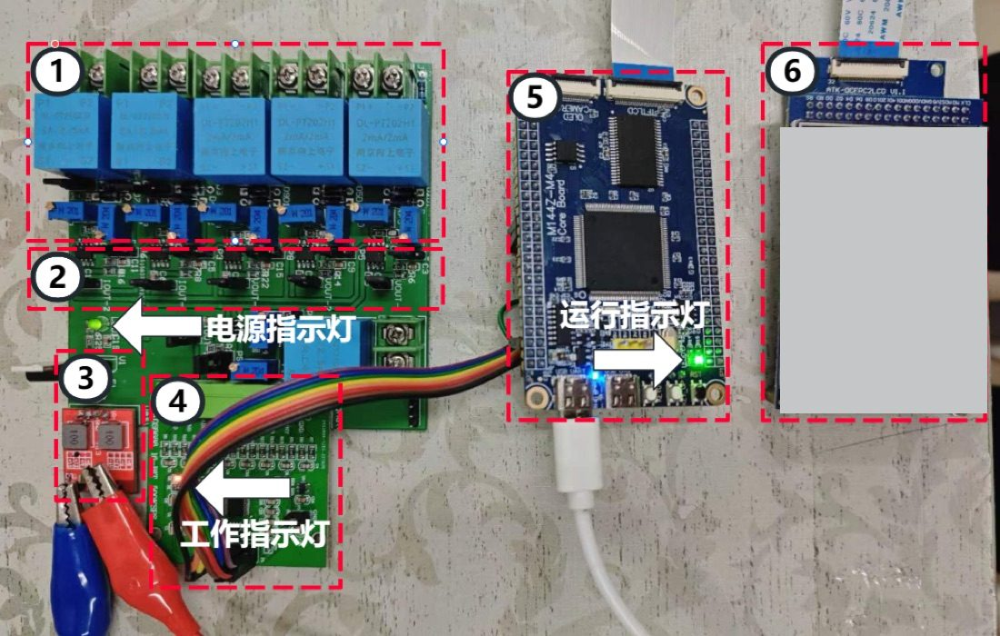
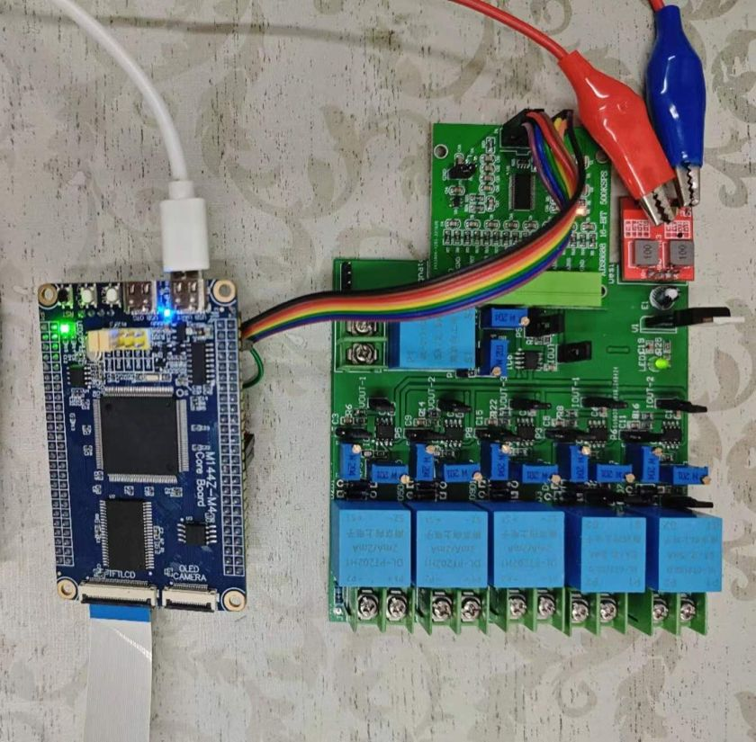
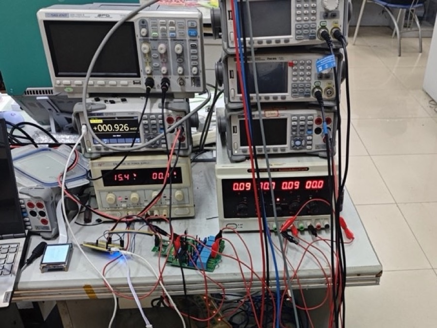
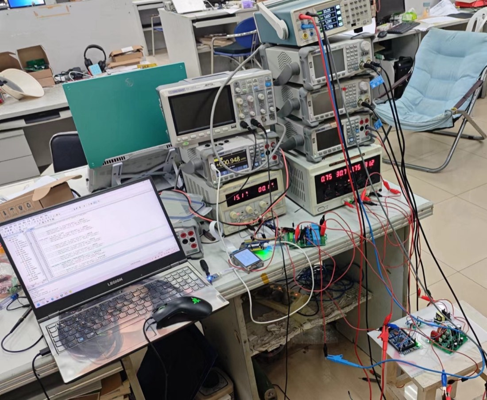
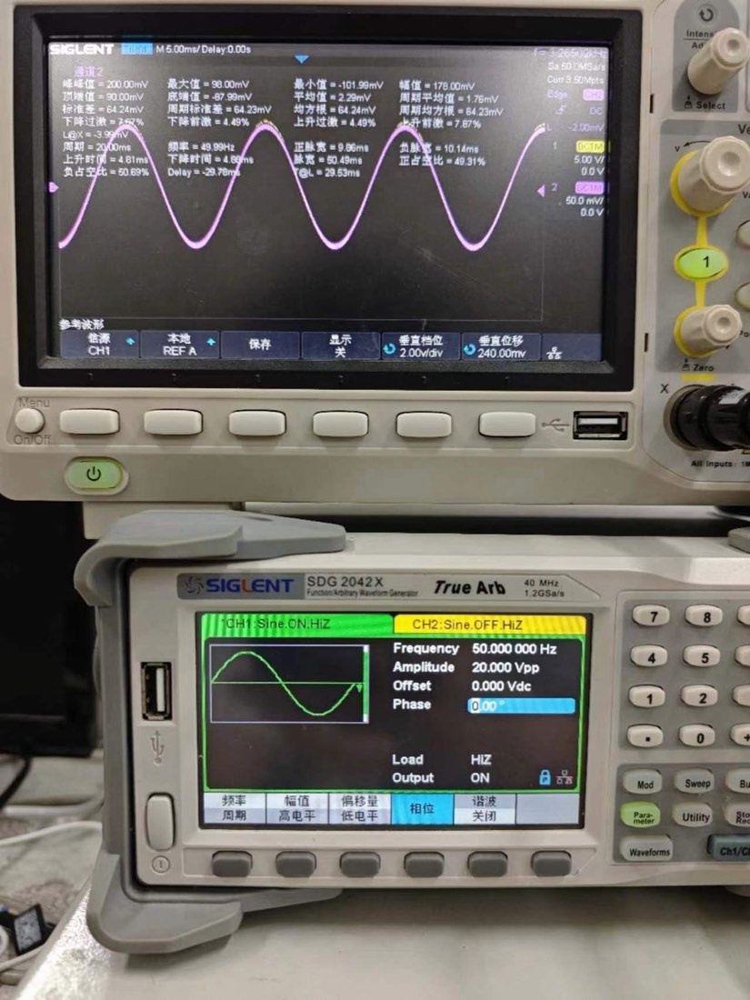
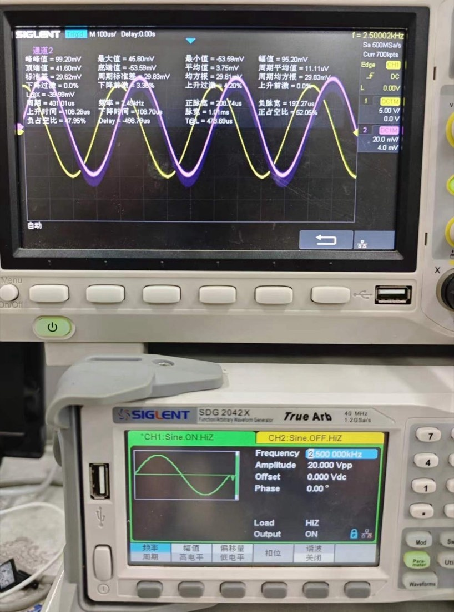

摘要 Abstract
本文设计并实现了一套基于 ARM 微控制器的三相电能计量系统，目标是在便携、低成本的单芯片架构下完成稳态电能质量参数的采集与计算。系统由电压/电流互感器、信号调理与二阶抗混叠低通滤波、16 位 8 通道 ADC ADS8688 和 STM32F407ZGT6 组成；以 10.24 kHz 定时触发采样，每帧 1024 点，在 Cortex-M4 上完成 FFT 以及有效值、功率、功率因数、频率、谐波畸变率和三相不平衡度计算，结果经 TFT LCD 实时显示。以 Tektronix PA1000 为参考，在单相工频回路上对 6 组工况进行比对：电压读数最大相对偏差 0.46%，电流最大相对偏差 7.23%，功率因数最大绝对偏差 0.06；三档谐波畸变率的偏差不超过 0.23 个百分点，频率读数与基准一致；平衡负载下不平衡度读数为 0.00%，不平衡负载下可检出电压与电流不平衡度的变化。结果表明，单芯片方案能够完成稳态参数的测量；电流通道的系统偏差、低 Q 值抗混叠滤波器对高次谐波的衰减，以及基于峰值谱线的频率估计，构成当前实现的主要误差来源与适用边界。
关键词电能质量；三相电能计量；ARM；快速傅里叶变换；谐波畸变率；三相不平衡度
01引言Introduction
1.1背景与问题
电能质量通常从频率偏差、电压偏差、谐波畸变和三相不平衡等维度描述。三相系统理想情况下各相幅值相等、相位互差 120°，但非线性负荷、不对称负荷以及输配电环节的阻抗会使实际波形偏离正弦与对称条件。谐波与不平衡会增加电机与变压器的附加损耗，电压暂降与中断则影响精密设备的运行；对电网节点和重要用户侧进行持续监测，是定位扰动源、划分责任和验证治理措施的前提。
商用固定式监测终端与便携式分析仪（如 Fluke 435 系列、Schneider PowerLogic PM8000 等）功能完整，覆盖暂态事件、波形记录与通信，但价格、功耗与体积面向专业巡检场景。高端分析仪多采用 DSP+MCU 双处理器架构，由 DSP 承担 FFT 与小波运算、MCU 管理人机接口与通信。对于 50 Hz 工频、50 次以内谐波的稳态监测，这一算力配置并非必要；单颗带 FPU 的 ARM 微控制器在理论上可以同时承担采样控制、FFT、参数计算与显示管理。
本文关注的问题是：在 10.24 kHz 采样率、6 通道、1024 点 FFT 的条件下，单芯片 ARM 方案能否完成稳态电能质量参数的计算，并达到可用的测量精度；其误差来源与适用边界在哪里。
1.2技术路线与取舍
电能质量分析装置的主控方案大致有三类。DSP 方案对 FFT、滤波等运算有专门的指令与流水线，适合高采样率与复杂算法，但外设管理与用户界面较弱；FPGA 方案以并行逻辑实现多通道同步采集与实时处理，灵活性和吞吐量高，但开发周期长、成本高；DSP+MCU 双核方案兼顾运算与人机接口，是高端分析仪的常见架构，但系统复杂度、功耗与成本同步上升。
本设计选择单核 ARM，依据有三点。第一，50 Hz 基波与 50 次以内谐波的分析带宽有限，10.24 kHz 采样率下 6 通道的数据率在 Cortex-M4 的处理能力之内；第二，STM32F407 带硬件浮点单元，FFT 与均方根运算无需定点化改造；第三，单芯片即可管理 LCD、按键与通信接口，硬件结构简单，便于分模块验证。
这一选择的代价是：没有专用 DSP 的运算余量，也没有 FPGA 的并行通道；算法分辨率、滤波器设计与通道标定需要更谨慎地权衡。本文通过实测数据说明这些代价在哪些范围内可以接受。
1.3本文工作
本文的工作包括三个方面：(1) 设计并搭建 6 通道模拟前端、抗混叠滤波与 ADS8688 数据采集硬件；(2) 实现定时采样、SPI 驱动、1024 点 FFT 与参数计算软件；(3) 以 PA1000 为参考完成模块级与整机级测试，并对误差来源、分辨率限制与适用边界进行讨论。
本文不覆盖电压暂降、闪变、暂态事件与间谐波等非稳态指标；整机比对在单相回路上完成，三相不平衡度单独测试。这些范围限制在第 4 节集中说明。
02系统设计System Design
2.1设计约束与总体结构
系统面向 50 Hz 工频稳态信号，设计分析范围覆盖 2–50 次谐波，即最高分析频率 2.5 kHz。为满足采样定理，采样率取 10.24 kHz；每帧 1024 点，对应约 0.1 s、5 个工频周期，FFT 频率分辨率为 fs/N = 10 Hz。6 个测量通道（3 路电压、3 路电流）使用相同的调理与滤波网络，以便通道间保持一致。
- 主控
- STM32F407ZGT6，Cortex-M4，168 MHz，硬件 FPU
- ADC
- ADS8688，16 bit，500 kSPS，8 单端 / 4 差分
- 通道
- 3 路电压 + 3 路电流
- 采样
- 10.24 kHz 定时触发，1024 点 / 帧
- 量程
- ±5.12 V，1 LSB = 0.15625 mV
- 分析带宽
- 2.5 kHz（50 次谐波）；受滤波器幅频特性限制
- 参数
- Urms、Irms、P、Q、S、PF、f、THD、ε
- 显示
- TFT LCD 实时刷新
总体结构如图 1。模拟与采集部分完成幅值变换、电磁隔离、限幅保护、相位补偿与抗混叠滤波；ADS8688 在 TIM3 触发下自动扫描 6 个通道；STM32F407 通过 SPI1 读取转换结果，在时域计算有效值与功率，在频域完成 FFT 及谐波、相位、频率和不平衡度计算；结果送 TFT LCD 显示。
采样时序由 TIM3 的 84 MHz 时钟、预分频系数 99 和自动重装值 81 决定，实际触发频率为 10.2439 kHz，与标称 10.24 kHz 相差 0.038%。在 50 Hz 处，这一差异对应的频率偏差约 0.02 Hz，小于 10 Hz 的 FFT 分辨率；但它使每帧长度为 4.998 个工频周期，而非严格的 5 个周期，构成轻微的频谱泄漏来源。
ADC 配置为 ±5.12 V 双极输入，1 LSB = 10.24 V / 216 = 0.15625 mV。该量化步长是电压、电流通道的分辨率下限；实际噪声与通道耦合会使有效分辨率低于 16 位。
2.2模拟前端与抗混叠滤波
电压通道采用 PT202H1 电压互感器，电流通道采用 CT21C 2.0 电流互感器（变比 2000:1）。互感器同时完成幅值变换与电网侧、测量侧的电磁隔离。调理电路将互感器二次电流转换为电压，设置限幅保护与相位补偿；电压通道在额定输入 380 V 时输出约 3.53 V（约 100:1），电流通道额定输入 5 A 对应 2.5 mA 二次电流。
每通道后接二阶压控电压源型低通滤波器，元件取值为 R1 = 470 Ω、R2 = 510 Ω、C1 = C2 = 0.13 μF。该网络的自然频率为 f0 = 1 / (2πC√(R1R2)) ≈ 2500.6 Hz，单位增益下的品质因数为 Q = √(R1R2) / (R1 + R2) ≈ 0.50。由此，f0 处的增益约为 0.50（−6 dB），−3 dB 点约在 1.61 kHz；2.5 kHz 是自然频率，也是 50 次谐波频率，并不是 −3 dB 截止频率。
实测中，输入 2.5 kHz 正弦时输出峰峰值 99.2 mV，约为输入的一半（增益 0.50），与 Q ≈ 0.50 的计算一致。1 kHz 处该网络的增益约 0.86（−1.3 dB），2.5 kHz 处为 0.50（−6 dB）；因此它并不是一条在 2.5 kHz 内平坦的通带，而是从数百赫兹起缓慢滚降的二阶低通。
对本文的测量而言，这意味着高次谐波幅值被系统性压低，THD 与分次谐波读数会受幅频响应影响；六通道采用相同网络与元件取值，通道间相对相移较小，三相相位差与不平衡度计算所受影响有限。电压、电流通道之间的残余相移由各自的 RC 网络补偿，残余部分进入功率因数误差。
这一滤波器的设计目标是抗混叠，而不是提供平坦的测量带宽。提高 Q 值可以改善 2.5 kHz 内的平坦度，但在相同自然频率下会减弱对高频分量的衰减；更可行的方案是增加滤波阶数，或在软件中按实测幅频/相频响应做校正。

(a)
(b)硬件平台按模块划分，便于分模块测试与故障定位；代价是跳线较多、体积偏大，模拟走线较长。这一结构是实验验证阶段的形态，也是后续单板化改进的对象。
2.3数据采集与软件流程
ADC 选型在 AD7606 与 ADS8688 之间进行，主要参数见表 1。两者均为 16 位、8 通道；ADS8688 的最大吞吐量为 500 kSPS，高于 AD7606 的 200 kSPS，支持 8 路单端或 4 路差分输入，采用 SPI 接口，内置 4.096 V 基准与自动通道扫描。对本文 6 通道、10.24 kHz 的采样需求，两者在吞吐量上都有余量；选择 ADS8688 的主要原因是单端输入便于与单端调理电路衔接，SPI 占用引脚少，自动扫描简化了驱动逻辑。
| 参数 | AD7606 | ADS8688 |
|---|---|---|
| 分辨率 | 16 bit | 16 bit |
| 最大吞吐量 | 200 kSPS | 500 kSPS |
| 输入方式 | 仅差分 | 8 单端 / 4 差分 |
| 模拟输入范围 | ±10 V、±5 V | ±10.24 V、±5.12 V、±2.56 V |
| 基准电压 | 2.5 V（外部或内部） | 4.096 V（内置） |
| 数据接口 | 并行 | SPI |
| 内置功能 | 数字滤波器 | 基准、自动通道扫描 |
数据来源：两款器件的数据手册；表中为典型值。
系统将 ADS8688 配置为 6 通道自动扫描、±5.12 V 双极输入。SPI1 工作于主机模式、8 位数据帧、双线全双工，时钟极性与相位按 ADS8688 时序要求设置。TIM3 中断以 10.24 kHz 触发一次扫描，回调中读取 6 通道转换值并写入 6×1024 缓冲区；缓冲区写满后置位采样完成标志。主循环检测到标志后执行 FFT 与参数计算，计算与采样解耦，避免计算期间丢点。
软件数据流与参数映射如图 3。时域支路对每帧 1024 点计算 Urms、Irms、有功功率 P 与视在功率 S；频域支路对 6 个通道分别做 1024 点 FFT，由基波复数求电压与电流的相位差，由幅谱求各次谐波幅值、THD 与峰值频率，由三相基波复数经对称分量法求不平衡度。
数据帧率的上限约为 10 帧/秒（每帧约 0.1 s）；实际刷新率还取决于 FFT、参数计算与 LCD 刷新耗时，本文未单独测量。
频率估计取幅谱最大峰对应的 bin k，按 f = k·fs/N 反算。由于 fs/N = 10 Hz，该方法只能分辨 10 Hz 的频率间隔；在 50 Hz 工频下读数稳定为 50 Hz，但不能用于变频或频率偏差的精细测量。这一限制在第 3.4 节结合实测读数进一步说明。
2.4参数计算
有效值与功率按定义法计算。设每帧采样点数为 N = 1024，u[n]、i[n] 为电压、电流的离散序列：
三相总有功功率为各相之和；视在功率按各相 UrmsIrms 求和。功率因数由基波相位差计算：对电压、电流序列分别做 FFT，取基波频点复数 U1、I1，φ1 = ∠U1 − ∠I1。
严格定义的功率因数为 P/S；在谐波畸变较小（本文 THD 不超过 10%）时，两者差异有限。本文采用基波相位差，是为了与相位补偿电路的设计目标对应。
总谐波畸变率按 2–50 次谐波计算：
三相不平衡度采用对称分量法。设 a = ej120°，由三相基波复数 Ua、Ub、Uc 求正序与负序分量：
式中 N 为每帧采样点数，u[n]、i[n] 为离散序列，Uh 为第 h 次谐波有效值，U+、U− 为正序、负序基波复数。本文只使用基波分量计算不平衡度，谐波对不平衡度的影响未纳入；零序分量也未参与，三相四线制不对称负载下的零序影响需另行评估。
03实验与结果Experiments and Results
3.1测试平台与方法
测试分为模块级与整机级两部分。模块级测试在焊接完成的硬件平台上进行，使用 Siglent SDG2042X 任意波形发生器、数字示波器与直流电源；整机测试以单相工频电源、可调阻性/阻感性负载为对象，参考仪器为 Tektronix PA1000 单相功率分析仪。三相不平衡度测试使用三个可调滑动变阻器作为三相负载。测试环境与接线如图 4。
PA1000 的电压、电流、功率因数、THD 与频率读数作为比对基准。需要说明三点：其一，整机基本电参数在单相回路上完成，系统六通道独立设计与验证，三相三线/四线制可通过前端接线切换，但本文不把单相结果外推为三相整机精度；其二，PA1000 为单相功率分析仪，不能提供三相不平衡度基准；其三，参考仪器未做不确定度评定，本文给出的偏差是两台装置读数之差，不等同于计量学意义上的误差限。
误差定义如下：δx = (xsys − xref) / xref × 100%；功率因数采用绝对差值 ΔPF = PFsys − PFref，因为 PF 是 0–1 的无量纲量，百分比误差在接近 1 时缺乏物理意义。表中所有偏差保留两位小数。

(a)
(b)3.2模块级验证
采样与调理电路。A 相电压通道输入 20 Vpp 标准正弦，经互感器与调理电路后输出 0.2 Vpp，缩放比约 100:1，与设计一致。图 5(a) 为示波器测得的输入/输出波形，输入由 SDG2042X 产生，频率 50 Hz。
抗混叠滤波电路。输入 2.5 kHz 正弦时，输出峰峰值 99.2 mV，约为输入的一半（增益 0.50）。按 2.2 节的计算，该网络在自然频率处的增益为 Q ≈ 0.50，实测与计算一致。图 5(b) 为滤波器输出波形。需要再次指出，−3 dB 点约在 1.61 kHz，2.5 kHz 是自然频率；因此该滤波器在 2.5 kHz 处已经衰减 6 dB，不能视为平坦通带。
ADS8688 采样电路。将 6 个通道短接，输入 3.300 V 直流，配置 ±5.12 V 量程与自动扫描。照片所示单帧读数为 CH0 3300.00 mV、CH1 3300.94 mV、CH2 3300.00 mV、CH3–CH5 3299.69 mV，通道极差 1.25 mV，约 8 LSB。理论量化步长为 0.15625 mV，实际极差大于单一量化误差，来源包括电源纹波、采样线长度与通道间耦合。相对于 3.300 V 输入，1.25 mV 约为 0.04%；在小信号通道，这一固定波动的影响需要另行评估。
单帧读数只能反映该帧的通道一致性，不能替代长期漂移与噪声统计；本文未对多帧数据做标准差计算。

(a)
(b)3.3基本电参数
6 组工况覆盖 21.68–179.56 V、0.124–1.250 A 的电压电流范围，负载为阻性与阻感性。测量结果与偏差见表 2，偏差分布见图 7。
| 工况 | Tektronix PA1000（参考） | 本系统 | 偏差 | ||||||
|---|---|---|---|---|---|---|---|---|---|
| U / V | I / A | PF | U / V | I / A | PF | δU / % | δI / % | ΔPF | |
| 1 | 21.68 | 0.124 | 0.81 | 21.63 | 0.119 | 0.75 | −0.23 | −4.03 | −0.06 |
| 2 | 45.86 | 0.249 | 0.85 | 45.78 | 0.231 | 0.80 | −0.17 | −7.23 | −0.05 |
| 3 | 60.04 | 0.574 | 0.89 | 59.93 | 0.537 | 0.83 | −0.18 | −6.45 | −0.06 |
| 4 | 114.67 | 0.735 | 0.91 | 114.36 | 0.719 | 0.86 | −0.27 | −2.18 | −0.05 |
| 5 | 150.70 | 0.969 | 0.91 | 150.00 | 0.957 | 0.89 | −0.46 | −1.24 | −0.02 |
| 6 | 179.56 | 1.250 | 0.92 | 179.43 | 1.170 | 0.90 | −0.07 | −6.40 | −0.02 |
δU = (U − Uref) / Uref × 100%，δI 同理；ΔPF = PF − PFref。U、I 为有效值，PF 的量纲为 1。所有偏差均为负值，表示本系统读数低于 PA1000。
电压通道 6 组相对偏差在 −0.46% 至 −0.07% 之间，最大 0.46%，平均 0.23%；电流通道在 −7.23% 至 −1.24% 之间，最大 7.23%，平均 4.59%；功率因数绝对偏差为 0.02–0.06，平均 0.04。所有偏差均为负，说明本系统读数系统性偏低。
电流偏差明显大于电压，且随工况变化不呈单调关系。一个可解释的来源是电流互感器二次波形中的谐波经二阶低通滤波后损失部分有效值分量；另一个来源是互感器变比、调理增益与通道标定的误差。现有数据不足以将两者分离，后续应通过逐通道注入标准信号，分别测量增益与相位误差。
功率因数由基波相位差计算，电流幅值偏差不直接进入 PF。因此 PF 的系统性偏低更可能来自相位补偿残差与滤波器相移，而不是电流幅值误差的叠加；这一点与“PF 误差随电流误差同向”的直觉不同，需要在后续的相位标定中验证。
电压通道的偏差较小且同样为负，说明前端增益存在约 0.1%–0.5% 的系统性偏低；这一量级在电阻、电容与互感器容差范围内，但未经标准源标定，不能据此给出修正系数。
3.4频率与谐波畸变率
以实验室自制单相逆变电路为被测对象，改变调制波参数获得 3 组不同的电压 THD，PA1000 与本系统的读数见表 3。
| 通道 | PA1000 THD / % | 本系统 THD / % | ΔTHD / pp | PA1000 f / Hz | 本系统 f / Hz |
|---|---|---|---|---|---|
| A 相 | 2.51 | 2.74 | +0.23 | 50 | 50 |
| B 相 | 4.33 | 4.45 | +0.12 | 50 | 50 |
| C 相 | 8.97 | 9.01 | +0.04 | 50 | 50 |
pp 为百分点；ΔTHD = 本系统 − PA1000。三组频率读数均为 50 Hz；系统频率分辨率为 10 Hz（见 2.3 节），50 Hz 为峰值 bin 对应的读数。
三组 THD 的偏差为 +0.23、+0.12、+0.04 个百分点，均在 0.25 个百分点以内；频率读数均为 50 Hz，与基准一致。
这里需要区分“读数一致”与“频率测量精度”。本系统的频率由幅谱峰值 bin 反算，bin 宽 10 Hz；50 Hz 落在第 5 个 bin，因此读数只能是 10 Hz 的整数倍附近。该结果说明基波定位正确，但不能说明系统具备 0.01 Hz 量级的频率测量能力。LCD 显示 4 位小数（如 50.0000 Hz），显示位数高于实际分辨能力；更合理的显示方式是保留 1 位小数或直接显示频点序号。
THD 偏差为正（系统读数略高），且幅度较小。滤波器对 1 kHz 以上分量已有衰减，理论上会使高次谐波读数偏低；但 THD 由各次谐波共同决定，逆变源的谐波分布、FFT 泄漏与噪声也会影响结果。本文未保存 2–50 次谐波幅值，无法做分次比对，因此不对偏差方向作进一步归因。
分次谐波数据缺失是本次实验的一项限制；后续应保存各次谐波幅值与相位，以支持误差分解与滤波器幅频校正。
3.5三相不平衡度
以三个可调滑动变阻器作为三相负载：先将三相阻值调至相同，记录平衡状态；再改变一相或多相阻值，记录不平衡状态。电压、电流不平衡度按式 (6) 计算，结果见表 4。
| 负载状态 | 电压不平衡度 / % | 电流不平衡度 / % |
|---|---|---|
| 平衡 | 0.00 | 0.00 |
| 不平衡（工况一） | 0.94 | 1.83 |
| 不平衡（工况二） | 0.93 | 2.74 |
不平衡度按负序/正序基波有效值之比计算。本次测试未接入可读取不平衡度的参考仪器，表中数据用于一致性/趋势验证，不给出测量误差。
平衡状态下电压、电流不平衡度均为 0.00%，说明三相对称输入下算法没有引入固定偏置；不平衡状态下电压不平衡度为 0.93%–0.94%，电流不平衡度为 1.83%–2.74%，电流对负载不对称更敏感，与负序分量随负荷电流变化的预期一致。
本次测试未接入可读取不平衡度的参考仪器，PA1000 为单相功率分析仪，无法提供三相不平衡度基准。因此表 4 只能说明算法能够检出不平衡状态及其变化趋势，不能给出不平衡度的测量误差。这是本文结果解释的一项限制。
不平衡度只使用基波分量，零序分量未参与；在三相四线制不对称负载下，零序对电压不平衡的影响需另行评估。
04讨论Discussion
第 3 节的结果可以归纳为两点：单芯片方案能够完成稳态参数的测量；测量偏差与分辨率限制主要来自模拟前端、滤波器与 FFT 参数，而不是 ARM 的算力。以下分别讨论误差来源、适用边界与改进方向。
4.1误差来源
前端与滤波。电流通道的最大偏差 7.23%，明显大于电压通道的 0.46%。所有偏差为负，说明存在系统性尺度偏低。可能来源包括：互感器变比与调理增益的容差；二阶低通在 1 kHz 以上对电流谐波的衰减；通道间串扰与电源纹波。现有数据不足以分离这些因素。若要做计量级修正，需要逐通道、逐量程的增益与相位标定，而不是用一个统一的修正系数。
算法与分辨率。FFT 为 1024 点、矩形窗；实际帧长为 4.998 个工频周期，非严格整周期，存在频谱泄漏与栅栏效应。频率取峰值 bin，分辨率 10 Hz；THD 只统计 2–50 次谐波；PF 用基波相位差近似 P/S。对于稳态 50 Hz 信号，这些近似在本文的精度目标内可以接受，但限制了频率偏差、间谐波与暂态参数的测量能力。
参考与实验条件。PA1000 的读数作为基准，但未评定其不确定度；测试接线、环境温度与负载稳定性未在本文中记录；整机比对在单相回路上完成。表中偏差应理解为两台装置在当时的读数差异，而不是系统的计量误差限。照片中的工况与表 2 也不一一对应，这一点在引用数据时需要区分。
4.2适用边界
系统适用于 50 Hz 稳态、谐波次数不超过 50、负载变化缓慢的监测场景，例如教学实验平台、用电设备前端与工业供电回路的常规巡检。它不适用于变频场合、电压暂降/中断、闪变与暂态事件；频率读数不能用于频率偏差计量；电流通道未经逐通道标定，不宜作为计量器具使用。
在三相四线制系统中，零序分量与中性线电流未纳入本文的不平衡度计算；若用于四线制不对称负载监测，需要增加零序通道或修改算法。整机基本电参数也只在单相回路上完成比对，三相同时接入时的通道串扰与同步误差尚未评估。
4.3改进方向
- 硬件单板化。将六个模块整合为单板 PCB，缩短模拟走线，增加地平面与屏蔽，降低通道耦合与电源纹波；保留测试点，便于后续标定。
- 通道标定。用标准源逐通道注入电压、电流信号，测量增益与相位误差，建立修正系数；对电流通道重点标定，并覆盖不同量程与功率因数角。
- 滤波器校正。按实测幅频/相频响应做软件校正，或增加滤波阶数、调整 Q 值；在通带平坦度与高频衰减之间重新权衡，并用分次谐波数据验证。
- 频谱处理。FFT 前加 Hann 窗并采用插值校正，或用过零检测/锁相环获取基波频率；保存 2–50 次谐波幅值与相位，以支持误差分解。
- 量程与验证。根据信号幅值切换 ±2.56 V 量程，提高小信号分辨率；接入三相标准源与参考分析仪，建立不确定度预算，并评估三相同时采样时的串扰。
05结论Conclusion
本文设计并实现了一套基于 ARM 微控制器的三相电能计量系统，完成了 6 通道模拟前端、ADS8688 数据采集、1024 点 FFT 与参数计算，并以 PA1000 为参考进行了模块级与整机级测试。系统能够输出电压、电流有效值、有功/无功/视在功率、功率因数、频率、电压谐波畸变率与三相不平衡度。
在单相工频回路的 6 组工况中，电压最大相对偏差 0.46%，电流最大相对偏差 7.23%，功率因数最大绝对偏差 0.06；三档 THD 的偏差不超过 0.23 个百分点，频率读数与基准一致；平衡负载下不平衡度为 0.00%，不平衡负载下可检出变化。
结果表明，单芯片 ARM 方案可以完成稳态电能质量参数的测量，但电流通道的系统偏差、低 Q 值滤波器对高次谐波的衰减，以及 10 Hz 的频率分辨率，限制了其计量级应用。后续工作应围绕通道标定、滤波器幅频校正、加窗插值与三相标准源比对展开。
R参考文献References
- 常潇, 王金浩, 雷达, 等. 电能质量综合指标评价方法研究[J]. 电力电容器与无功补偿, 2021, 42(05): 150-153.
- 李建明. 电能质量控制与电力谐波治理[J]. 电源技术应用, 2010(11): 7.
- 李鹏飞. 基于 FPGA+ARM 的电能质量分析仪研究与设计[D]. 北方工业大学, 2023.
- GB 12325—1990, 电能质量 供电电压允许偏差[S].（现行版本为 GB/T 12325—2008《电能质量 供电电压偏差》）
- GB/T 15945—2008, 电能质量 电力系统频率偏差[S].
- GB/T 24337—2009, 电能质量 公用电网间谐波[S].
- GB/T 15543—1995, 电能质量 三相电压允许不平衡度[S].（现行版本为 GB/T 15543—2008《电能质量 三相电压不平衡》）
- 黄文帅, 孙坚, 胡鹏程, 等. 配电网中三相不平衡度计算方法研究[J]. 信息技术与信息化, 2022(12): 174-177.
- IEC Publication 61000-4-15. Flicker-functional and design specification[Z]. 1997.
- Pei-Chen Lo, Yu-Yun Lee. Real-time FFT algorithm applied to on-line spectral analysis[J]. Circuits, Systems and Signal Processing, 1999(4): 377-393.
- Heydt G T, Fjeld P S. Applications of the windowed FFT to electric power quality assessment[J]. IEEE Transactions on Power Delivery, 1999, 14(2): 1411-1416.
- Rüfenacht A, Burroughs C J, Benz S P. Precision sampling measurements using ac programmable Josephson voltage standards[J]. Review of Scientific Instruments, 2008, 79(4): 794-800.
- 侯卫周, 谷城. 压控电压源二阶低通有源滤波电路设计与仿真[J]. 实验技术与管理, 2014, 31(10): 103-106.
- 单祥茹. TI 两款全新 ADC 功耗和性能达最优[J]. 中国电子商情(基础电子), 2014(12): 25-26.
- Texas Instruments. FFT Library Module User's Guide[Z]. 2002.
- 詹一鸣. 基于 .NET 的电能质量监测与分析系统的设计[D]. 武汉纺织大学, 2018.
- 于军, 朱凌云. 基于 DSP+ARM 的便携式电能质量分析仪的设计[J]. 计算机测量与控制, 2015, 23(9): 3241-3244.
- 饶丽华. 基于 ARM 和 DSP 的电能质量监测仪的研究[D]. 同济大学, 2008.
- 刘锦霞. 基于 ARM+FPGA 的高精度电能质量分析系统研究[D]. 河南科技大学, 2019.
- 郝建民. 采样定理与奈奎斯特准则的研究[J]. 遥测遥控, 1998(2): 12-20.
A附录Appendix
项目设计报告 PDF、实测照片与硬件资料统一放在资料首页的下载目录中；本页不再重复提供文件清单。